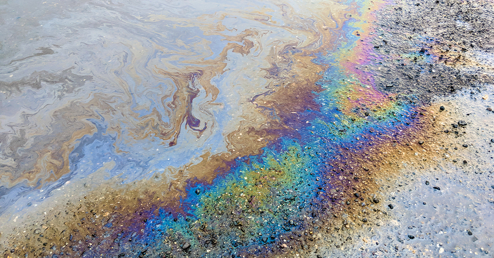

Magnolia Measurement & Compression
Our company offers comprehensive environmental remediation and rehabilitation services for the oil and gas industry. We provide advanced solutions, including bioremediation (in-situ and ex-situ), high and low thermal treatment, groundwater pump-and-treat systems, and soil vapor extraction. Our expertise includes dual-phase recovery, methane recovery systems, waste characterization, manifesting, and disposal. With decades of experience, we have completed projects involving the installation of complex remedial systems such as air sparging (AS), soil vapor extraction (SVE), and dual-phase vapor extraction (DPVE). Our team is certified in hazardous material handling (OSHA 29 CFR 1910.120; EPA 40 CFR 311) and holds a NORM Survey and Control Certification, ensuring safety and regulatory compliance at every project stage.

We have worked with renowned organizations such as the U.S. Army Corps of Engineers, the U.S. Coast Guard, and multiple state environmental agencies, including the MS Department of Environmental Quality and the LA Department of Environmental Quality. Our extensive project portfolio spans collaborations with industry leaders like Chevron, Dow Chemical, Shell, Marathon, and Exxon. Results-driven solutions are our product, and we address scores of environmental concerns: complex soil and groundwater contamination, methane recovery, and site restoration, to name a few. With a proven track record and commitment to the environment, we are a trusted partner for restoring sites to regulatory and ecological standards.